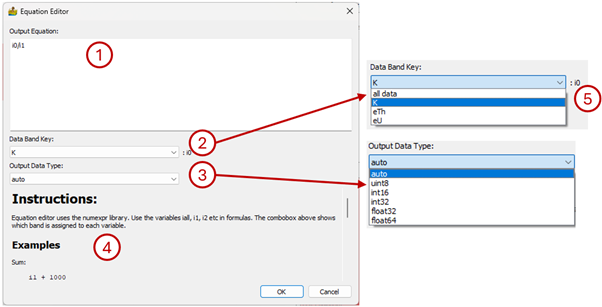

Equation Editor¶
The Equation Editor allows for script operations to be performed on either single or multiple bands of data. It makes use of the powerful numexpr library for the scripting.
The interface consists of the following:
Output Equation box where the equation is typed out. The variables iall, i1, i2 etc. represents the bands of the input dataset in formulas.
Data Band Key combo box. It shows which band is assigned to each variable. By clicking on the dropdown arrow, all the bands in the data set are listed. When selecting a band the variable associated with the band is shown to the right of the combo box. The variable name is for information purposes only, the user must type the equation manually in the equation box. If you want to apply an equation to all the bands in a data set, use iall.
Output Data Type combo box. This allows the user to specify the data type of the equation output. The auto option keeps the data type of the input data set.
Examples of some commonly used equations and Commands that are available.

Examples:¶
Sum:
i1 + 1000
Threshold between values 1 and 98, substituting -999 as a nodata value:
where((i1 > 1) & (i1 < 98) , i1, -999)
Mean (can be any number of arguments):
mean(i0, i1, i2) or mean(iall)
Standard Deviation (can be any number of arguments):
std(i0, i1, i2) or std(iall)
Commands:¶
Logical operators: &, | , ~
Comparison operators: <;, <=, ==, !=, >=, >
Arithmetic operators: +, -, , /, *, %, <<, >>
where(bool, number1, number2) : number1 if the bool condition is true, number2 otherwise.
sin, cos, tan, arcsin, arccos, arctan, sinh, cosh, tanh, arctan2, arcsinh,
arccosh, arctanh
log, log10, log1p, exp, expm1
sqrt, abs
mosaic, two arguments, e.g. mosaic(i0, i1)
mean, any number of arguments, e.g. mean(i0, i1, i2) or mean(iall)
std, any number of arguments, e.g. std(i0, i1, i2) or std(iall)
No data or null value: nodata